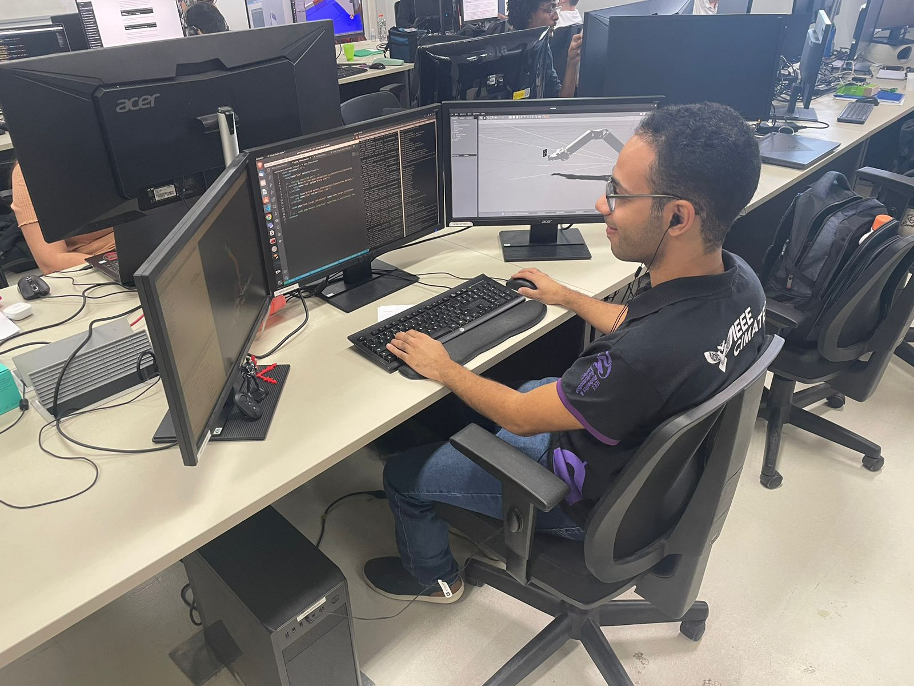

I am Gabriel Calmon
Name: Gabriel Calmon
City: Salvador, Bahia, Brazil
Email: engineer.gabrielcalmon@gmail.com
About me
I work in research and development of underwater solutions for the oil and gas industry. My work includes developing control systems for robotic platforms, applying computer vision techniques, and developing and reviewing software using C++ and Python with ROS2 (Robot Operating System).
I hold a Bachelor's degree in Electrical Engineering from Universidade SENAI CIMATEC and a Technical degree in Electromechanics from IFBA. I was a technological research fellow at the Center of Competence in Robotics and Autonomous Systems at SENAI CIMATEC, where I previously conducted one year of voluntary undergraduate research. I also served as a project leader at IEEE RAS CIMATEC. In 2021, I was a teaching assistant for the course Introduction to Programming Logic for the Computer.
Resume
Overview of my academic background and professional experience
Sumary
Education
Electrical Engineer
2020 - 2024
Universidade SENAI CIMATEC, Salvador, Bahia, Brazil
Developed a final year project entitled 'Stability control of a quadruped robot's movement using a robotic manipulator as a tail'.
Volunteered for two years in the IEEE RAS CIMATEC, where I led a project, managed a multidisciplinary team, and coordinated all development phases, which resulted in the 'Best Poster Award' at the VIII SIINTEC.
Volunteered in a research group, analyzing data on brazilian fuel resale and vehicle energy efficiency, which resulted in the publication of my first two scientific papers.
Acted as Undergraduate teaching assistant for the course 'Introduction to Programming Logic', strengthening my communication skills and adapting content presentation to the audience."
Electromechanical Technician
2015 - 2019
IFBA (Federal Institute of Bahia), Bahia, Brazil.
Developed a final year project entitled 'Automated Guided Vehicle Prototype for Cargo Transport'.
Was Member of the local robotics team for two years.
Worked on the assembly and programming of line follower robots for competitions.
Developed activities to support the teaching of programming logic through robotic platforms.
Experience
Robotics Engineer - Full time
2025 - now
Brazilian Institute of Robotics, Universidade SENAI CIMATEC, Salvador, Bahia, Brazil
- Development of control systems for underwater robotic solutions designed to inspection of petroleum infrastructure, using computer vision and reviewing C++ and Python software applied to ROS2.
Robotics Engineering Intern
2024 - 2024
Brazilian Institute of Robotics, Universidade SENAI CIMATEC, Salvador, Bahia, Brazil
- Assist on the develop of robotic underwater solution for inspection of petroleum infrastructure.
Undergraduate Research
2023 - 2023
Robotics and Autonomous Systems Competence Center, Universidade SENAI CIMATEC, Salvador, Bahia
- Integration of a robot manipulator and a Aruco visual system for position and orientation control.
Undergraduate Research
2022 - 2022
Robotics and Autonomous Systems Competence Center, Universidade SENAI CIMATEC, Salvador, Bahia
- Conceptual design of a CNC-based home garden.
Undergraduate Research
2021 - 2021
Universidade SENAI CIMATEC, Salvador, Bahia
- Data science applied to brazilian price parity policy and adoption of hydrous ethanol as a low-carbon biofuel and how fuel choice is affected by different flex-fuel vehicle models.
Project Leader
2020 - 2022
Student initiative IEEE RAS CIMATEC (Institute of Electrical and Electronics Engineers - Robotics and Automation Society), Universidade SENAI CIMATEC, Salvador, Bahia, Brazil
- Led a project, managing a multidisciplinary team and coordinating all development phases.
Publications
System Identification of a Servomotor Using Arx Model for Virtual Speed Sensing
Conference: IX SIINTEC
Year: 2023
Resume: Application of ARX-based system identification to estimate servomotor rotor speed from a PWM signal, enabling a low-cost virtual speed sensor with high estimation accuracy.
A Robotic Platform for Assistance in the Medical Triage Process
Journal: JBTH - Journal of Bioengineering, Technologies and Health
Year: 2023
Resume: The conceptual design of a robotic platform for assisting the medical triage process, presenting a virtual prototype designed to support healthcare professionals in disaster or overcrowding scenarios.
A Survey on Humanoids Robots: Perception, Mechanism and Control
Journal: JBTH - Journal of Bioengineering, Technologies and Health
Year: 2023
Resume: A survey of the state of the art in humanoid robots, focusing on perception systems, control strategies, and mechanical design.
Robot Manipulator Motion System With Orientation Constraint
Journal: VIII SAPCT
Year: 2023
Resume: (originally published in Portuguese) This work develops a motion planning system for the robot OpenManipulator-Pro capable of executing trajectories while respecting orientation constraints of the end-effector.
Induction of a Consumption Pattern for Ethanol and Gasoline in Brazil
Journal: Sustainability
Year: 2022
Resume:This work analyzes how the ethanol/gasoline price ratio affects fuel choice across different flex-fuel vehicle models, examining how variations in vehicle fuel economy influence the economic viability of hydrous ethanol. The study highlights limitations of using a single fuel economy ratio for all vehicles and discusses how better consumer information could encourage greater adoption of ethanol as a lower-emission fuel.
Analysis of Hydrous Ethanol Price Competitiveness after the Implementation of the Fossil Fuel Import Price Parity Policy in Brazil
Journal: Sustainability
Year: 2021
Resume: This work analyzes the competitiveness of hydrous ethanol in Brazil by evaluating the ethanol/gasoline price ratio across 15 state capitals between 2012 and 2019. It provides evidence on how fuel pricing policies influence competition in distribution and retail markets and their potential impact on the adoption of biofuels in Brazil.
Extracurricular Activities
During my undergraduate studies, I actively attended scientific events to broaden my perspective, develop new skills, and learn about ongoing research by other scholars. Since high school, I have also participated in academic competitions as a way to challenge myself beyond the classroom.
Awards
Award of "Best Poster"
2022
VIII SIINTEC Event (International Symposiumon of Innovation and Technology)
Award of "Outstanding Trainee"
2020
IEEE RAS CIMATEC Selection Process
3rd Place in Scientific Article Competition
2020
1st Researcher Challenge Seminar from Universidade SENAI CIMATEC
Honorable Mention
2019
15th OBMEP (Brazilian Public School Mathematics Olympiad)
National Medal of Merit
2019
Brazilian Olympiad of Robotics
Honorable Mention
2018
14th OBMEP (Brazilian Public School Mathematics Olympiad)
Bronze Medal
2018
Brazilian Olympiad of Robotics
Event Participation
X SIINTEC
2024
International Symposiumon Innovation and Technology
IX SIINTEC
2023
International Symposiumon Innovation and Technology
15th SBR
2023
Brazilian Symposium on Robotics
20th LARS
2023
IEEE Latin American Robotics Symposium
VIII SAPCT
2023
Seminar on the Evaluation of Scientific and Technological Research
VIII SIINTEC
2022
International Symposiumon Innovation and Technology
VII SAPCT
2022
Seminar on the Evaluation of Scientific and Technological Research
1st ENRON
2021
Regional Robotics Conference
IEEE RAS WEEK
2020
Institute of Electrical and Electronics Engineers Robotics and Automation Society Week
Portfolio
Here are some highlights about the projects I've worked on
{kind=link}
{kind=link}
{kind=link}
{kind=link}